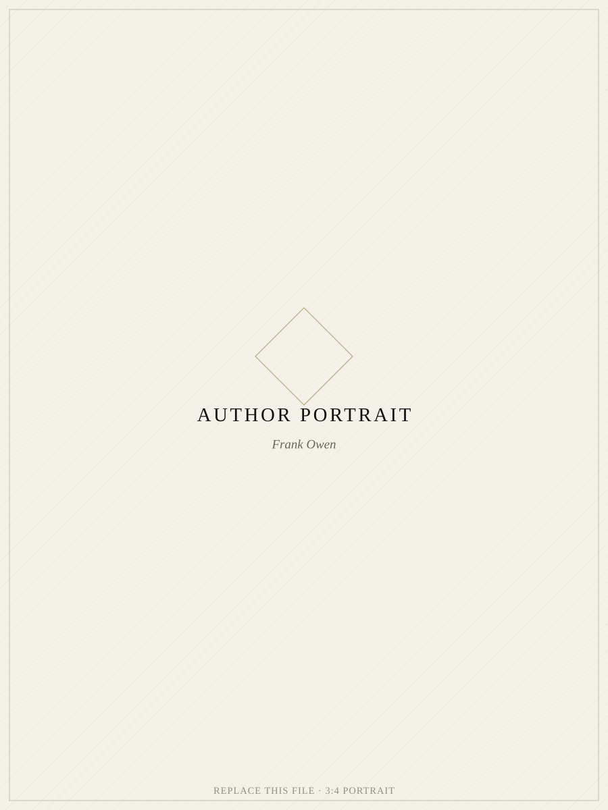

A Mapel Firm Case Study
Kenyan small and midsize companies chase new customers every day, while a fortune sits untouched in the client list they already have. Frank Owen spent a year proving it — one interview at a time.
Long before it meant customer, the word client meant something else entirely — cliens, one placed under another's protection and patronage. A customer is a transaction. A client is a trust.
Client List was built on that distinction.
The Asset Hiding In Plain Sight
Frank Owen kept noticing the same scene, in city after city: a business owner spending everything to win a stranger's attention, while the client who trusted them last month sat forgotten — in a notebook, a spreadsheet, a drawer.
So he did not write an opinion. He personally interviewed 108 small and midsize enterprises across Kenya, one conversation at a time, to find out exactly what was being ignored — and why.
What he found was not a marketing problem. It was a wealth problem. Every business he sat with was already holding an asset. Almost none of them were using it.
The client list — the real wealth, the fortune already in hand — was going untouched while its owners went looking elsewhere.
The Evidence
The hidden treasure within Kenyan small & midsize companies.
Two hundred pages, built entirely from evidence gathered face to face — not theory borrowed from elsewhere. Frank Owen personally interviewed 108 small and midsize enterprises across Kenya before writing a single chapter.
The book deliberately calls them clients, not customers. A client, historically, is someone placed under another's protection and patronage — not merely someone who pays. That distinction is the entire argument of the book.
Every page — the manuscript, the typography, the interior layout, the cover — was written and designed by Frank Owen alone. Nothing was outsourced.
Drawn from 108 face-to-face interviews across Kenya — evidence gathered firsthand, not theory borrowed from a textbook.
A deep black cover, a single diamond, classical serif typography. Every typographic and layout decision made personally.
Manufactured to specification and shipped home to Kenya — a physical object built to be kept, not skimmed.
How The Evidence Was Gathered
Any consultant can publish a framework about customer loyalty. Few will sit across from 108 business owners, in person, and simply listen long enough to hear what they were actually doing wrong.
Frank Owen's method was deliberately unglamorous. No surveys mailed out. No focus groups. Just conversation, notebook in hand, across markets, shopfronts, and offices in every corner of the country he could reach.
Traveled the country to sit face to face with small and midsize business owners — not a sample pulled from a database, but 108 real conversations.
Looked past what each owner said they wanted — more customers — to what they already had and were quietly ignoring: the client list.
Built the book's entire argument from what those 108 owners actually said. Evidence first. Theory nowhere.
The Process
Client List was never handed off. Frank Owen carried it personally through every stage — from the first idea to the ten-thousandth sale. This is that record.
The first notes: noticing a pattern no one else had written down.
108 conversations with Kenyan business owners, one notebook at a time.
Two hundred pages, drafted and redrafted by hand.
Typesetting every page himself — no outsourced layout.
Deep black. One diamond. Classical serif type.
Ten thousand hardbound copies, off the press.
The finished work, formally registered and protected.
Containers loaded, documents signed, thousands of copies bound for Kenya.
From Manuscript To Market
Most authors stop at the manuscript. Frank Owen managed the entire journey a book takes to reach a reader — production, logistics, and every single sale.
Design & Writing · Kenya
No Outsourcing
Manuscript, typography, interior layout, and cover — every decision made personally by Frank Owen, start to finish.
Manufacturing · China
Quality Personally Overseen
Frank Owen managed the full print run overseas, overseeing print quality and the logistics of shipping thousands of copies home to Kenya.
Distribution · Kenya
10,000 Copies. Zero Retailers.
No bookstore shelved it. Frank Owen sold all 10,000 copies himself, in malls and public spaces across the country — one conversation, one reader, at a time.

The Author
"I kept meeting business owners spending everything to reach a stranger, while the client who trusted them last year sat forgotten in a drawer. I did not want to argue the point. I wanted to prove it — one interview at a time."
Frank Owen personally interviewed 108 small and midsize enterprises across Kenya before writing a word of Client List. He then wrote the manuscript and designed the entire book himself — cover, typography, and interior layout — without outsourcing a single page.
He managed the full print production run overseas in China, overseeing quality and the logistics of shipping thousands of copies home. Then he sold all ten thousand copies himself, in malls and public spaces across the country, one reader at a time.
Frank Owen
Author, Client List
Every Legacy Begins With One Decision
Frank Owen now leads Mapel Firm — The World's Wisdom Preservation House — carrying that same discipline into every life and legacy it now preserves for generations to come. If this is what one man builds by himself, imagine what we build for you.
Start The ConversationEvery enquiry is reviewed personally by Frank Owen and the Mapel Firm team.